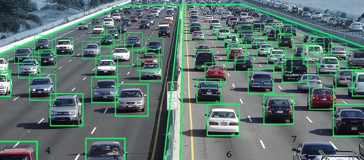

Vehicle detection system
This was a project I started back in august 2020 when I learned cv,ml.
Vehicle detection plays an important role in safe driving assistance technology.
Smart Traffic light system
For every frame:
Detect potential regions of interest
Filter detected regions based on vertical & horizontal similarity
If its a new region, add to the collection
Clear collection every 30 frames
.
Technologies:
- - Python
- - Cv2
- - Imutils